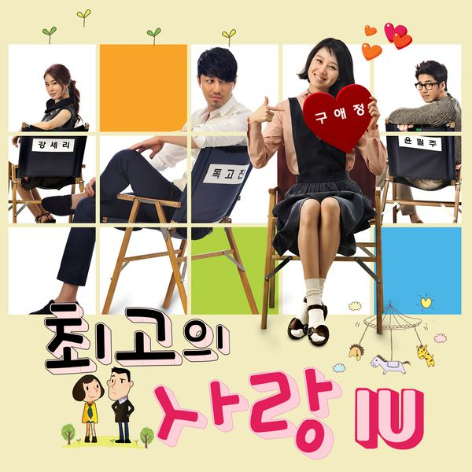

느낌이 오잖아 떨리고 있잖아
언제까지 눈치만 볼 거니
네 맘을 말해봐 딴청 피우지 말란 말이야
네 맘 가는 그대로 지금 내 손을 잡아
어서 내 손을 잡아
우연히 고개를 돌릴 때 마다
눈이 마주치는 건
며칠밤 내내 꿈속에 나타나
밤새 나를 괴롭히는 건
그 많은 빈자리 중에서 하필
내 옆자릴 고르는 건
나도 모르게 어느새 실없는 웃음
흘리고 있다는 건
그럼 말 다했지 뭐 우리 얘기 좀 할까
느낌이 오잖아 떨리고 있잖아
언제까지 눈치만 볼 거니
네 맘을 말해봐 딴청 피우지 말란 말이야
네 맘 가는 그대로 지금 내 손을 잡아
핸드폰 진동에 심장이 덜컥
내려 앉는다는 건
오 나도 모르게 어느새 짓궂은 네 말투
자꾸 듣고 싶은걸
어떡해
(저기 멀리 걸어온다)
(눈이 마주친다)
언제까지 넌 모른척 할거니
사랑이 온거야 너와 나 말이야
네가 좋아 정말 못 견딜 만큼
그거면 된거야 더는 생각하지 말란 말이야
네 맘 가는 그대로
느낌이 오잖아 떨리고 있잖아
언제까지 눈치만 볼 거니
네 맘을 말해봐 딴청 피우지 말란 말이야
네 맘 가는 그대로 지금 내 손을 잡아
그냥 내 손을 잡아 지금 내 손을 잡아